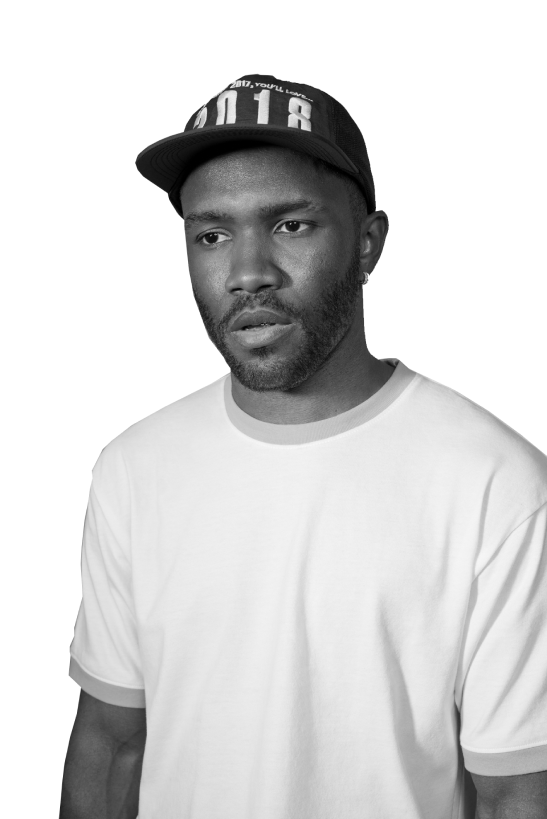
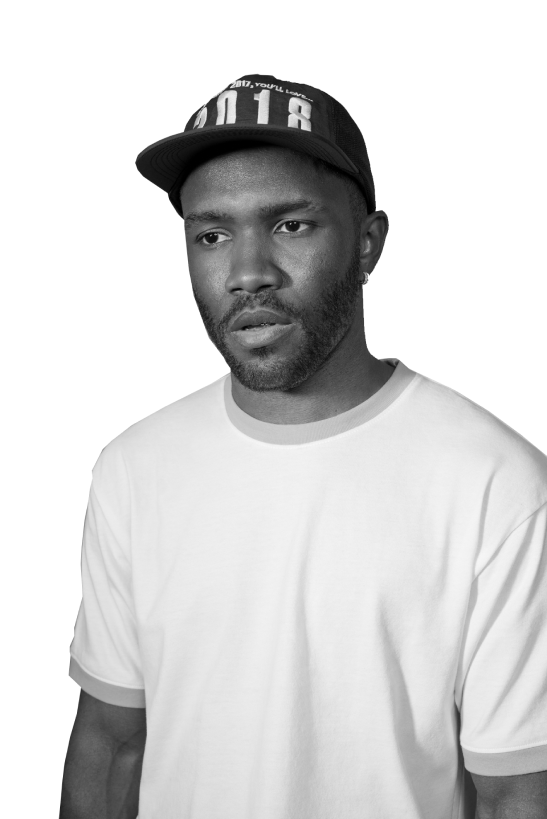

Nostalgia, Ultra (2011) - 14Tracks Channel Orange (2012) - 17 Tracks Endless (2016) - 19 Tracks / Visual Album Blonde (2016) - 17 Tracks
Chanel - 2017 Biking(Jay Z & Tyler, the Creator) - 2016 Lens - 2016 Biking (Solo) - 2016 Provider - 2016 Moon River - 2018 DHL - 2019 In My Room - 2019 Dear April - 2020 Cayendo - 2020
Novacane - Nostalgia, Ultra Swim Good - Nostalgia, Ultra Thinkin' Bout You - Channel Orange Pyramids - Channel Orange Sweet Life - Channel Orange Lost - Channel Orange Super Rich Kids (Feat. Earl Sweatshirt) - Channel Orange Nikes - Blonde

 
frank ocean

frank ocean